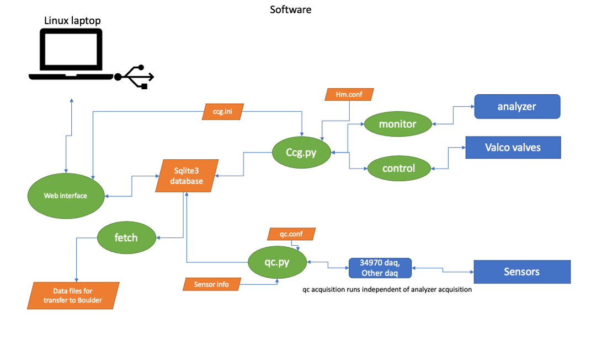

Software
Overview
Control and data acquistion of the measurement system is done with laptop computer running the Linux operating system, and using several python programs. The programs depend on several configuration files, and short-term results are stored in a sqlite3 relational database. Long-term results are fetched from the database and stored in text files. These text files are transferred back to GML headquarters in Boulder, Coloraod, where the data is processed. A user interface to the measurement system is provided using a web browser and a web server on the linux laptop.
Configuration
Configuration files:
Default Name |
Purpose |
|---|---|
ccg.ini |
System configuration |
ccg.conf |
For hm program |
qcchannels |
Sensor configuration |
qc.conf |
For hm program doing qc data acquisition |
System Configuration
Several configuration files are used. The main one is for the configuration of the
main data acquisition program ccg.py. The file (by default called ccg.ini) specifies
a number of things, such as the reference gases used, the type of analyzer, timing of
when gases are sampled etc.
This configuration file uses a format that can be read by python’s configparser module.
However, because the web interface php programs also read the configuration file, the file
must be compatible with php’s parse_ini_file routine which puts some restrictions on the
format of the file (comments must be preceeded by ‘;’, and
the ‘=’ sign is used as the separator).
The file is made up of sections marked by a [section] header line. This is followed by
key/value pairs separated by an ‘=’ sign. There is a [DEFAULT] section, a section for
the system (e.g. [CRDS]), a section for the analyzer ([PICARRO]) and a section for the
qc measurement system ([QC]).
An example looks like
[DEFAULT]
; this is the system to be used. Only one allowed
; There must be a section with the same name
system = CRDS
stacode = MLO
HOMEDIR = /home/ccg
ref_gases = R0, S1, S2, S3, S4, TGT
sample_gases = Line1, Line2
;--------------------------------------------------
[CRDS]
; what analyzer is to be used. There must be a section with this name
analyzer = PICARRO
ref_gases = R0, S1, S2, S3, S4, S5, TGT1, TGT2
; Automatically run a target gas at the following interval
TARGET_INTERVAL = 11
TARGET_INTERVAL_UNITS = hours
;--------------------------------------------------
; analyzer specific settings
[PICARRO]
gases = CO2, CH4, CO
;
; location in the output string where the gas value is located.
; comma separated string containing value for each gas
gas_field_num = 31, 34, 28
[QC]
# Our home
HOMEDIR = /home/ccg/qc
# sensor info. This is file name located in homedir
qc_table = mlo_qc.conf
Sensor Configuration
A separate configuration file is used to specify the name, types, and locations, of the various sensor that are used for measuring the quality control (QC) signals.
Example
# Number: Device: Channel number: Name: Units: Field Name: Location: Sublocation: Interval between readings (s): Min limit: Max limit
# Set interval to 0 to skip taking readings from that sensor
#------------------------------------------------------------------
1: hp34970: 201: Inlet 1 Bleed Flow Rate: L/min: bleed_flow: inlet: 1: 30: 1: 999
2: hp34970: 203: Inlet 1 Back Pressure: psia: back_pressure: inlet: 1: 30: 4: 8
#
3: hp34970: 202: Inlet 2 Bleed Flow Rate: L/min: bleed_flow: inlet: 2: 30: 1: 999
4: hp34970: 204: Inlet 2 Back Pressure: psia: back_pressure: inlet: 2: 30: 4: 8
#
5: hp34970: 205: Sample Pressure: torr: sample_pressure: instrument: picarro: 30: 680: 720
6: hp34970: 206: Sample Flow Rate: cc/min: sample_flow: instrument: picarro: 30: 50: 200
7: hp34970: 212: Room Temperature: deg. C: temperature: misc: room: 30: 0: 40
8: hp34970: 214: Water Trap Temperature: deg. C: temperature: misc: trap: 30: -100: -40
#
9: none: 0: R0 Tank Pressure: psi: pressure: tank: R0: 0: 300: 2500
10: none: 0: S1 Tank Pressure: psi: pressure: tank: S1: 0: 300: 2500
11: none: 0: S2 Tank Pressure: psi: pressure: tank: S2: 0: 300: 2500
12: none: 0: S3 Tank Pressure: psi: pressure: tank: S3: 0: 300: 2500
13: none: 0: S4 Tank Pressure: psi: pressure: tank: S4: 0: 300: 2500
14: none: 0: S5 Tank Pressure: psi: pressure: tank: S5: 0: 300: 2200
15: none: 0: TGT1 Tank Pressure: psi: pressure: tank: TGT1: 0: 300: 2500
16: none: 0: TGT2 Tank Pressure: psi: pressure: tank: TGT2: 0: 300: 2500
#
17: none: 0: Cavity Pressure: torr: cavity_pressure: instrument: picarro: 0: 139.9: 140.1
18: none: 0: Cavity Temperature: deg. C: cavity_temp: instrument: picarro: 0: 44.9: 45.1
19: none: 0: DAS Temperature: deg. C: das_temp: instrument: picarro: 0: 39: 42
20: none: 0: Etalon Temperature: deg. C: etalon_temp: instrument: picarro: 0: 44.7: 44.8
21: none: 0: Warmbox Temperature: deg. C: warmbox_temp: instrument: picarro: 0: 44.9: 45.1
22: none: 0: CRDS Water Vapor: ppm: water_vapor: instrument: picarro: 0: -0.01: 0.01
Data acquisition programs
Data acquisition is broken down into two main python programs, ccg.py and qc.py. These programs run
independently of each other. Several python modules are included and the actual communications with the devices
is done using a python program called hm.py. Documentation on hm is available here.
- ccg.py
- ccg_control.py
runaction
utils
db
hm
- ccg_monitor.py
db
utils.py
hm
- qc.py
- qcscan.py
utils
db
runaction
lock_file
utils
hm
Additional programs and modules
- ccgis.py - General purpose processing
insitu
refgas
response
rawfiles
utils
db.py - database interface
mk_sensor_table.py - create and populate the sensors database table
sample_gas.py - manually control the gas flowing through the system
hm.py
fetchdb.py
fetchqc.py
fetchlog.py
fetchtanks.py
cleandb.py
List of Python files
File name |
Purpose |
Used by |
|---|---|---|
ccg.py |
Main data acquistion program for insitu system |
|
ccg_control.py |
Control gases sampled in system |
ccg.py |
ccg_monitor.py |
Monitor output from analyzer |
ccg.py |
qc.py |
Main data acquisition program for qc signals |
|
qcscan.py |
Module for qc.py |
qc.py |
hm.py |
Hardware manager, communicate with devices |
|
ccgis.py |
Process data |
|
changemode.py |
Manually change measurement mode |
|
cleandb.py |
Remove old data from database |
|
dates.py |
Date conversion functions |
multiple |
db.py |
Database interface class |
multiple |
fetchdb.py |
Fetch analyzer data from database |
|
fetchlog.py |
Fetch operator logs from database |
|
fetchqc.py |
Fetch qc data from database |
|
fetchtanks.py |
Fetch reference tank info from database |
|
insitu.py |
Calculate mole fractions |
ccgis.py |
lock_file.py |
Lock a file |
hm.py |
mean.py |
Mean and standard deviation functions |
multiple |
mk_sensor_table.py |
Create sensor database table |
|
rawfiles.py |
Create ‘raw’ file data lines |
ccgis.py |
refgastab.py |
Get reference gas info |
ccgis.py |
response.py |
Analyzer response functions |
ccgis.py |
runaction.py |
Handle action files for hm |
hm.py |
samplegas.py |
Manually sample a gas |
|
schema.py |
Create database tables |
|
utils.py |
Utility functions |
multiple |